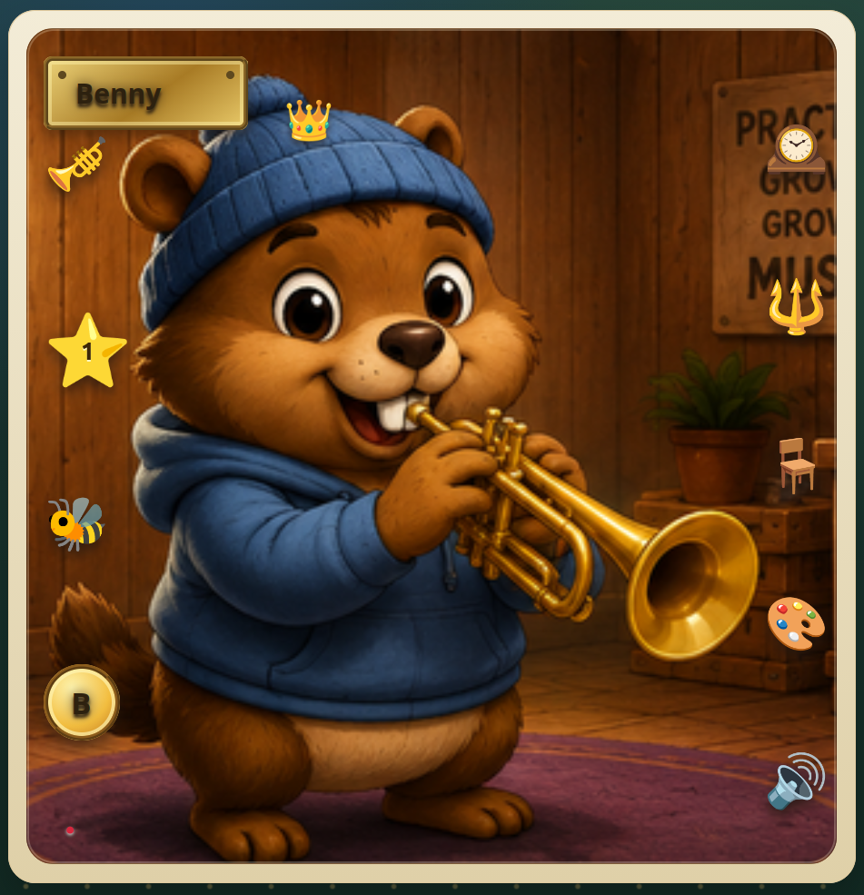
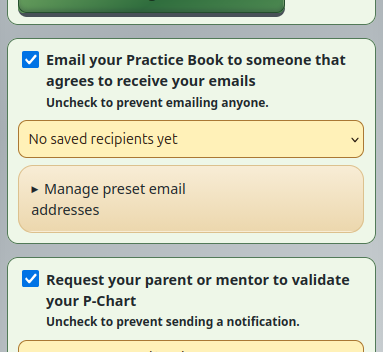
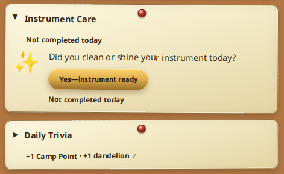

Featured Project
Project Repo
Woodshed Woodchuck
Production web application that gamifies music practice for student musicians through persistent accounts, practice tracking, challenges, contests, rewards, practice verification, and interactive music tools.
FastAPI
PostgreSQL
SQLAlchemy
Alembic
JavaScript
Render
- Persistent accounts and cross-device application state
- Trusted-adult practice verification workflows
- Seasonal challenges, contests, rewards, and progression systems
- Server-backed persistence and data integrity
- Automated testing across core user and gameplay workflows


